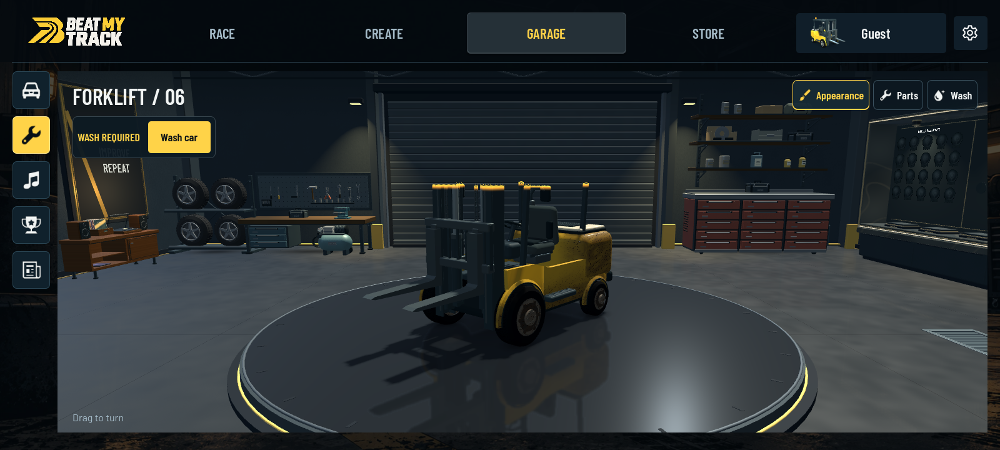
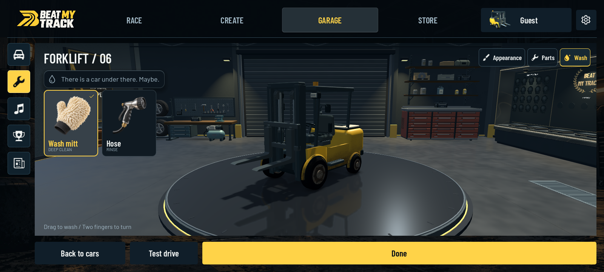
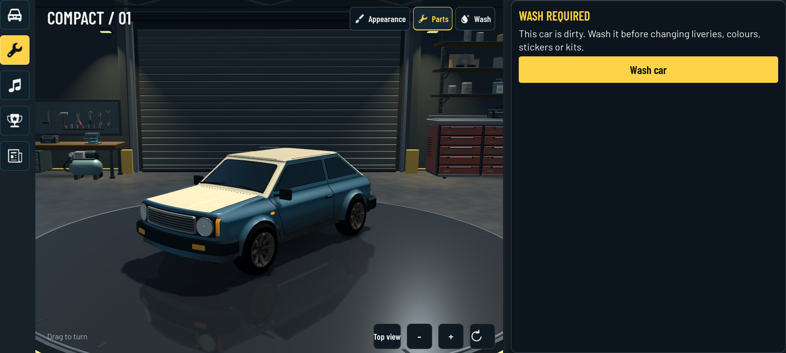
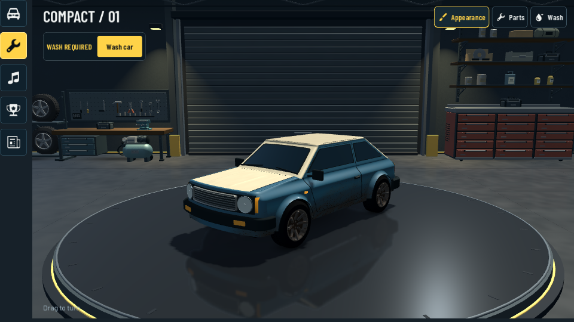
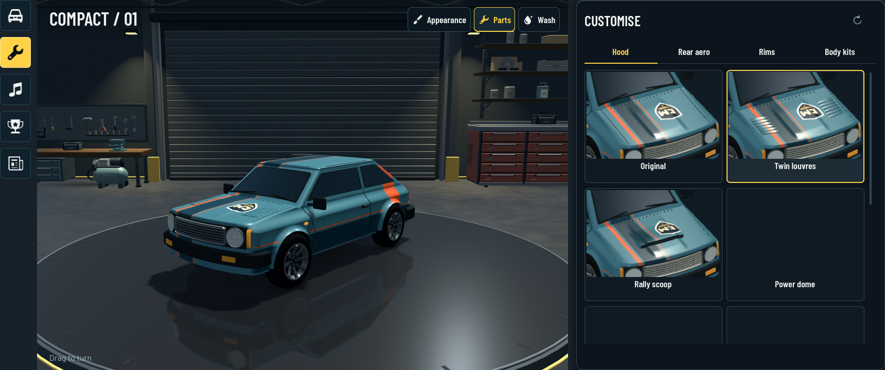
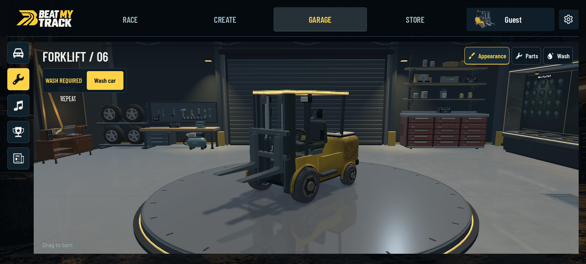

Actual native App captures using isolated dirty-Forklift records. The compact prompt replaces the full sidebar, and the four camera buttons are removed.






UI/shortcut checks: 549 per desktop renderer. Gesture checks: 65 per renderer. The broader cleanliness suite retains one Forklift film assertion, also reproduced on the original runtime; its assertions and thresholds are unchanged.
Actual commands, results and hashes · Scoped checkpoint
Client reload and owner visual/touch acceptance remain. No physical-device test was performed.